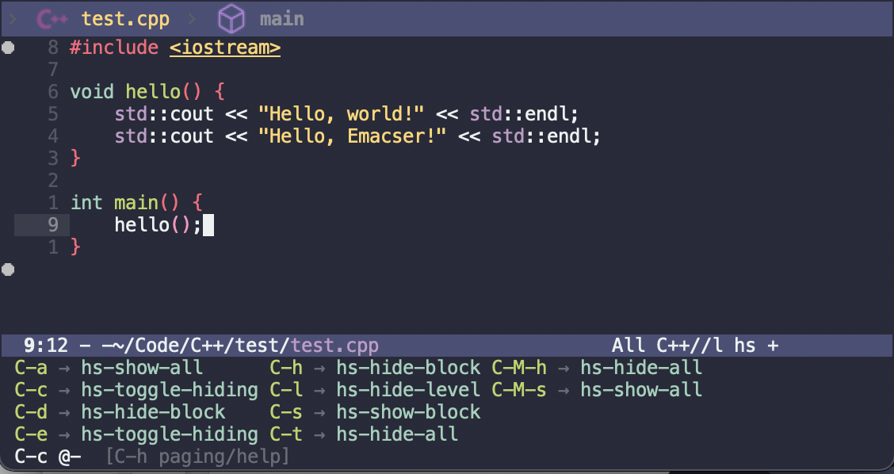
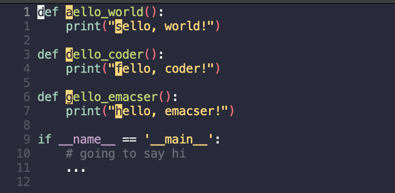
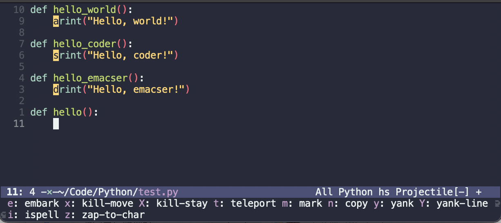
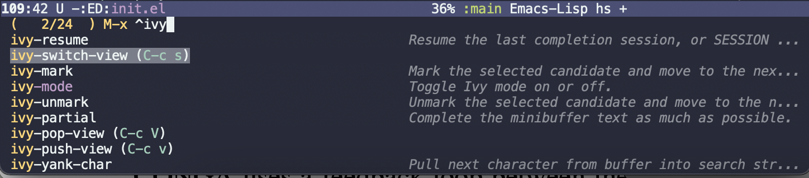
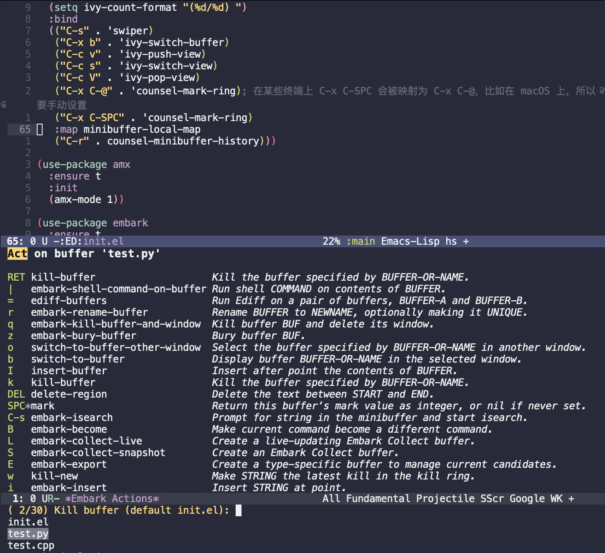
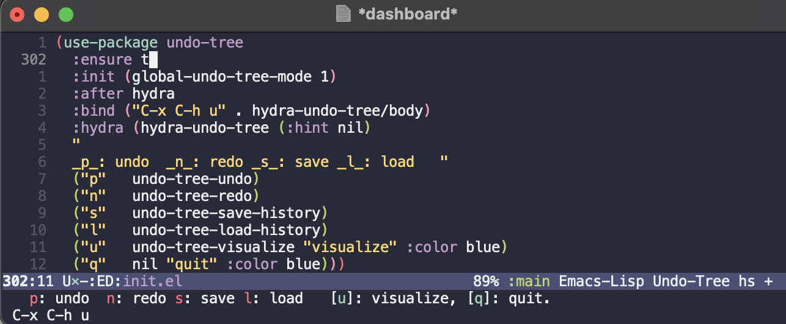
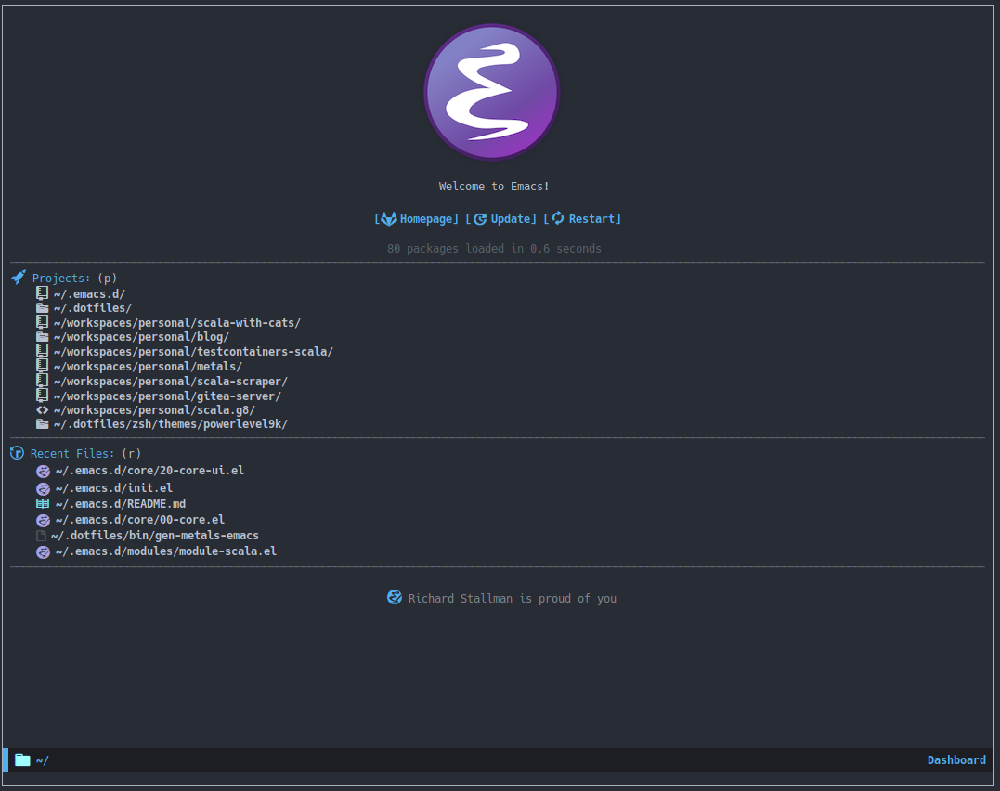
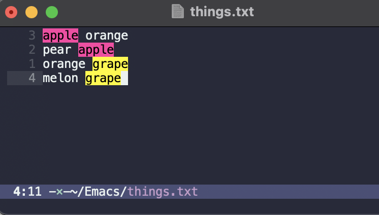
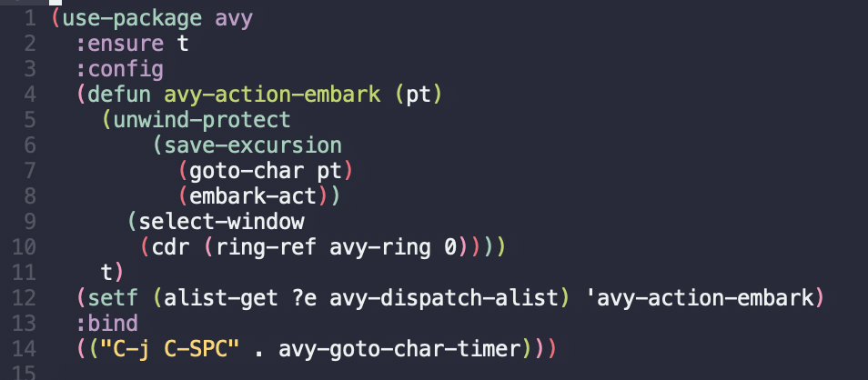

插件：功能增强类
上一篇教程我们解决了 Emacs 的主要痛点，这一篇我们将开始介绍 Emacs 更为强大的功能。 有几个插件的篇幅较长，原因在于其配置和使用相对复杂和特别，但绝对是效率利器，需要读者静下心学习。
Book marks
这是 Emacs 自带的功能。根据名字即可大概猜到其功能，就和电子书中的书签功能一样，在当前光标位置打上一个书签，之后可以随时跳转回来。主要涉及到如下四个命令：
C-x r m （bookmark-set） ：设置书签。可以为书签起个标记名称，默认为文件名。也可以为目录打书签。
C-x r b（bookmark-jump，如果在上一篇教程中安装了 counsel，应当已被覆盖为 counsel-bookmark）：跳转到书签。
C-x r l （bookmark-bmenu-list）：列出已有书签。
M-x bookmark-delete ：删除书签。
这在阅读代码的时候可是个十分方便的功能。
ivy view
顺着 Book marks，我们顺带一提上一篇教程中提及的 ivy 插件的额外功能——ivy view。它与 Book mark 的区别是直接将当前 Frame 中的 Window 的状态都进行保存，然后状态间切换。例如我们打开了多个窗口做一件事，但是中途需要看一些其它文件，那么想要回到刚刚的窗口摆放方式就是 ivy view
出场的地方了。与 Book marks 类似，涉及三个命令：
ivy-push-view：保存当前的窗口状态。在上一篇教程的配置中绑定为快捷键 C-c v。
ivy-switch-view：切换窗口状态。 在上一篇教程的配置中绑定为快捷键 C-c s。
ivy-pop-view ：删除保存了的窗口状态。在上一篇教程的配置中绑定为快捷键 C-c V。
which-key（可选）
这是一个实用小工具，专门针对 Emacs 快捷键多而杂的问题，安装后，当按下部分快捷键前缀时，它会通过 minibuffer 提示你都有哪些可以按的快捷键及其命令名。例如启动了 hs-minor-mode 后，我们正常可以通过 C-c @ C-h 折叠代码块、用 C-c @ C-s 来展开代码块。但这个快捷键很长，时常记不住，那么有了 which-key 后我们可以先按下 C-c @ ，此时 which-key 就会提示我们接下来可以按的键：

对于选项过多的前缀，例如 C-x ，which-key 会显示出非常多的选项，那么就需要翻页，根据它的提示，我们只需要按下 C-h，然后按 n 或 p 进行向下翻页和向上翻页。
只需如下配置文件：
1(use-package which-key
2 :ensure t
3 :init (which-key-mode))
因为事实上快捷键熟练后并没有那么需要这个插件，有时候按下例如 C-x 这样的前缀后又会产生大量的备选项，所以并不是完全解决了这一痛点。但它配置简单，没有学习和配置成本，所以依然建议大家使用。而想要更好解决快捷键繁杂的问题，可以进一步参考下面提到的插件 hydra。
avy
avy 又是一个 abo-abo（Oleh Krehel）开发的 强大 插件，笔者 极力推荐读者使用，熟练后效率可以成倍提升。其最最基本的功能就是无需鼠标的快速光标跳转（思想来自于 vim 的 easymotion），但其能力远不止于此，它可以让你在不操作光标的情况下，快速对文本进行复制、剪切、粘贴，大大提高了围绕光标的操作的效率。接下来将会花一些篇幅介绍。第三个链接是一个博客，有详细地介绍 avy 的更多用法，读者如果感兴趣可以阅读一下，以下是 avy 主要内容的介绍。
操作逻辑抽象
在博客中提到了 avy 操作逻辑的抽象概念，也是很多 Emacs 命令的操作抽象：Filter、Select、Act，翻译过来就是“ 筛选”、“ 选择 ”、“ 行动 ”。举个例子，我们按 C-x C-f 打开文件，此时列出了当前目录下的所有文件名，按下文件名的前缀，待选文件的范围就会缩小，这就叫“ 筛选 ”；我们在其中最终选择了一个文件，这叫“选择 ”；最后按下回车，此时 Emacs 就会打开并切换到那个文件，这就叫” 行动 “。很多操作都可以归为这种模式。
基本用法
那么你的第一反应可能是，这不就是很正常的一个命令的用法吗，为什么说的这么抽象？ avy 就是在这个模式上做出了文章，其核心思想就是将三者进行解耦合，让这个模式支持更多的应用场景。我们来看看具体的用法。首先请在 ~/.emacs.d/init.el 中加入如下配置：
1(use-package avy
2 :ensure t
3 :bind
4 (("C-j C-SPC" . avy-goto-char-timer)))
(global-set-key (kbd "C-j") nil) ，将本身的 C-j 快捷键的功能去掉。在大部分模式下 C-j 的功能是 electric-newline-and-maybe-indent，是一个换行的快捷键，笔者个人觉得使用频率很低，于是索性去掉了这些快捷键。然后将 C-j 和其它键组合绑定了少量快捷键。当然，读者也可以选择使用 avy 中示例的 M-j 作为快捷键。
加入后让光标在这个作用域内，按下 C-M-x 让配置生效 。此时，就可以使用 avy 了 。假如我们有如下的 Python 代码：
1 def hello_world():
2 print("Hello, world!")
3
4 def hello_coder():
5 print("Hello, coder!")
6
7 def hello_emacser():
8 print("Hello, emacser!")
9
10 ...
那么如果此时我们的光标在其它位置，例如一个下面的代码中，而希望将光标移动到 hello_emacser 函数的位置，我们要么需要使用鼠标，要么需要用向上键一行一行地缓慢挪动，似乎都不够完美。有了 avy，我们就可以按下我们刚刚设定好的快捷键 C-j C-SPC 调用 avy-goto-char-timer，此时 avy 在等待你输入“目标位置的部分文本”，例如这个场景下，就输入：“h“、“he” 、”hel“ 等等都可以（要快一点输入），此时，原本是 "h" 的位置会被替换为一个高亮了的其它字母，那么我们希望跳转到 hello_emacser 的函数定义处，对应了字母 g，于是我们紧接着按 g，就会发现光标成功移动到了 hello_emacser 的开头。

按照刚刚提到的模式，可以这样理解这个场景：光标位置正常可以是整个 Window 上的任意位置，但当使用 avy
并输入了部分文本后，就将目标光标位置的范围缩小到了上图的 6 个位置，这就是“ 筛选 ”。我们按下 g 时就是” 选择 “，最后 avy 自动执行“ 行动 ” ——将光标挪到相应位置。
进阶用法
别忘了，跳转只是它最最基本的功能。事实上，当我们“ 筛选 ”后、” 选择 “前，可以更改 avy 的“ 行动”，有哪些行动呢？读者可以在输入了“部分文本”后，按下 ? 键，就会显示出 avy 当前支持的“ 行动 ”。
例如下图所示，我们写着写着希望换一种写法，对代码进行重构，把上面的三个 print 语句合并在一个函数中，那么一行行分别去选中、复制、回来、粘贴肯定是很麻烦的。于是，我们按下 C-j C-SPC，输入 p ( print 的开头字母），此时按下 ?，下面的 Minibuffer 就会显示出可以选择的其它行动，我们希望使用 Y: yank-line，于是输入 Y（注意大小写），然后按下我们目标 print 语句的标签，例如 a，这时，a 对应的语句就完全被复制到了当前光标所在的位置。我们的光标没有丝毫的移动，就成功将一行代码复制了过来。

读者可以自行试试其它命令的效果，例如 kill-stay 可以“隔空剪切文本”、teleport 可以“把远处的文本传送到当前位置“等等。注意我们中途按下的 ? 只是对大家的提示 ，如果熟练记住了几个常用的“行动”，就可以直接省略按 ? 了 。
另外，记得尝试一下命令 avy-copy-line、avy-move-line、avy-copy-region 和 avy-move-region， 可以以行为单位进行操作，光标都不用动，就可以快速复制、剪切一行乃至一段文字，效率非常高。
avy 中并没有笔者的 e: embark 这一项。事实上，这些可以选择的命令也是我们可以自定义的，这里的embark 就是添加了使用 embark 插件的一个“ 行动 ”，在下文会进一步介绍。如果读者不喜欢这种输多个字符然后等待 avy 生效这样的方式，也可以把快捷键调用的命令改为例如 avy-goto-word-1，这时就可以通过输某个词的首字母就可以直接触发 avy 的筛选。
marginalia
一个为 Emacs minibuffer 中的选项添加注解的插件。
1(use-package marginalia
2 :ensure t
3 :init (marginalia-mode)
4 :bind (:map minibuffer-local-map
5 ("M-A" . marginalia-cycle)))

embark（可选）
embark 是另一个比较神奇的工具。Emacs 基本的操作流程是先输入命令再输入命令作用的对象。例如，我们先按下 C-x C-f 再输入文件名来打开文件。但是有的时候，我们按下命令、选择了文件后，可能又后悔了，想要对相同的文件输入另一个命令。例如我们按下 C-x k 打算关闭一个后台 buffer，然后输入了文件名，这时我们忽然想再查看一眼那个文件。那么平常，我们只好按下 C-g 放弃这次命令，再用 C-x b 切换过去。而有了 embark ，我们可以在按下 C-x k 、输入了部分文件名选中文件后 ，按下 C-. 触发 embark- act，这时按下 o 就可以在另一个新的窗口打开这个 buffer 了。我们无需放弃命令重新输入，而是继续输入就好了。

直接使用官网提供的配置就好（官网中强烈建议 embark 和 marginalia 一同使用，所以最好先装好 marginalia）：
1(use-package embark
2 :ensure t
3 :init
4 ;; Optionally replace the key help with a completing-read interface
5 (setq prefix-help-command #'embark-prefix-help-command)
6 :config
7 ;; Hide the mode line of the Embark live/completions buffers
8 (add-to-list 'display-buffer-alist
9 '("\\`\\*Embark Collect \\(Live\\|Completions\\)\\*"
10 nil
11 (window-parameters (mode-line-format . none))))
12 :bind
13 (("C-." . embark-act) ;; pick some comfortable binding
14 ("C-;" . embark-dwim) ;; good alternative: M-.
15 ("C-h B" . embark-bindings))) ;; alternative for `describe-bindings'
如果想要让 avy 也支持 embark，需要在 avy 的配置中添加 :config：
1(use-package avy
2 :ensure t
3 :config
4 (defun avy-action-embark (pt)
5 (unwind-protect
6 (save-excursion
7 (goto-char pt)
8 (embark-act))
9 (select-window
10 (cdr (ring-ref avy-ring 0))))
11 t)
12 (setf (alist-get ?e avy-dispatch-alist) 'avy-action-embark)
13 :bind
14 (("C-j C-SPC" . avy-goto-char-timer)))
hydra
hydra 进一步解决了 Emacs 的复杂的命令如何组织的问题，这又是一个 abo-abo（Oleh Krehel）编写的插件。which-key 虽然对快捷键起到了提示作用，但是对于 Emacs 数量这么庞大的命令来说还是有很多不足。
hydra 主要功能是把一组特定场景的命令组织到一起， 通过简单按键来进行调用。这个思路和 Vim 的各种 mode 是类似的。例如上一篇教程中提到的 undo-tree、上文的 avy 和接下来提到的插件 multiple-cursors 、调试插件 dap-mode，我们会发现它们有功能相近的多个命令，实际中都要频繁使用，而都绑定上快捷键又会难以记忆。那么有了 hydra 我们就可以把它们都组织到一起。我们先以 undo-tree 举个小例子。
首先安装好 hydra ，而由于我们希望在 use-package 里进行配置，再安装一个 use-package-hydra
小插件可以让我们的 use-package 多一个 :hydra 关键字，可以更方便地配置。 这段配置应当写在靠前一点的位置比较保险。
1(use-package hydra
2 :ensure t)
3
4(use-package use-package-hydra
5 :ensure t
6 :after hydra)
然后，我们起初对 undo-tree 的配置非常简单：
1(use-package undo-tree
2 :ensure t
3 :init (global-undo-tree-mode))
而想要和 hydra 结合可以变为：
1(use-package undo-tree
2 :ensure t
3 :init (global-undo-tree-mode)
4 :after hydra
5 :bind ("C-x C-h u" . hydra-undo-tree/body)
6 :hydra (hydra-undo-tree (:hint nil)
7 "
8 _p_: undo _n_: redo _s_: save _l_: load "
9 ("p" undo-tree-undo)
10 ("n" undo-tree-redo)
11 ("s" undo-tree-save-history)
12 ("l" undo-tree-load-history)
13 ("u" undo-tree-visualize "visualize" :color blue)
14 ("q" nil "quit" :color blue)))
看起来很长，其实就是定义了一个小表格，可以让我们先按下 C-x C-h u 来调用 hydra-undo-tree/body 这个命令，它会在 minibuffer 中显示出我们配置中的字符串，形成下图效果：

此时，我们就可以通过选择 p、n、s、l 和 u 来分别触发五个 undo-tree 的命令了。 所以可以总结为，hydra 可以任意将一些命令组织在一起，方便在某个场合下调用。
具体来说，我们通过 :hydra 标签可以声明这样一组命令，起了个名字，在上面的例子中就是 hydra-undo-tree，被称为 hydra-awesome，习惯以 hydra- 开头。想要调出这一组，需要输入的是就是加上 /body，上例中也就是 hydra-undo-tree/body，当然你可以选择直接调其中的某个命令例如 hydra-undo-tree/undo-tree-undo。
一个值得注意的小细节是每个提示词的颜色，有的为红色，有的为蓝色。事实上颜色是有相对应的设置的，红色的表示按过了之后依然可以继续按，不会退出 hydra；蓝色表示按了一次就会退出 hydra。例如上例中，我们可能需要多次 undo 和 redo，所以 p 和 n 都是红色的。而 u可以展示出 undo-tree，而展示出来之后我们就不再需要 hydra 了，所以我们把 u配置成了蓝色。所有颜色如下：
| color | toggle |
|----------+----------------------------|
| red | |
| blue | :exit t |
| amaranth | :foreign-keys warn |
| teal | :foreign-keys warn :exit t |
| pink | :foreign-keys run |
不想用颜色的话也可以直接用 :exit t 表示按完后就退出。此外还有很多细节可以调整，例如超时退出，具体参考 hydra 的主页 Wiki吧。
multiple-cursors
多光标编辑可是编辑器的必备需求。这个插件提供了多种生成多光标的方式。
- 连续多行 ：我们按下
C-SPC触发一次set-mark，随后让光标向下移动，再输入M-xmc/edit-lines就生成连续多行光标。 - 编辑多处同一段文本 ：选中文本，输入命令
mc/mark-next-like-this、mc/mark-previous-like-this、mc/mark-all-like-this，看名字就知道，分别可以标记下一个词、上一个词、所有词。还可以用mc/skip-to-next-like-this和mc/skip-to-previous-like-this跳过一部分。 - 鼠标点击选择 ：见配置，将
mc/toggle-cursor-on-click绑定到某个键位。笔者使用的是Ctrl+Shift+ 鼠标左键。
1(use-package multiple-cursors
2 :bind
3 ("C-S-<mouse-1>" . mc/toggle-cursor-on-click))
可以看到这个插件的命令比较杂，一一绑定快捷键难以记忆。这就是又一次要使用 hydra 形成一组快捷键了：
1(use-package multiple-cursors
2 :ensure t
3 :after hydra
4 :bind
5 (("C-x C-h m" . hydra-multiple-cursors/body)
6 ("C-S-<mouse-1>" . mc/toggle-cursor-on-click))
7 :hydra
8 (hydra-multiple-cursors
9 (:hint nil)
10 "
11Up^^ Down^^ Miscellaneous % 2(mc/num-cursors) cursor%s(if (> (mc/num-cursors) 1) \"s\" \"\")
12------------------------------------------------------------------
13 [_p_] Prev [_n_] Next [_l_] Edit lines [_0_] Insert numbers
14 [_P_] Skip [_N_] Skip [_a_] Mark all [_A_] Insert letters
15 [_M-p_] Unmark [_M-n_] Unmark [_s_] Search [_q_] Quit
16 [_|_] Align with input CHAR [Click] Cursor at point"
17 ("l" mc/edit-lines :exit t)
18 ("a" mc/mark-all-like-this :exit t)
19 ("n" mc/mark-next-like-this)
20 ("N" mc/skip-to-next-like-this)
21 ("M-n" mc/unmark-next-like-this)
22 ("p" mc/mark-previous-like-this)
23 ("P" mc/skip-to-previous-like-this)
24 ("M-p" mc/unmark-previous-like-this)
25 ("|" mc/vertical-align)
26 ("s" mc/mark-all-in-region-regexp :exit t)
27 ("0" mc/insert-numbers :exit t)
28 ("A" mc/insert-letters :exit t)
29 ("<mouse-1>" mc/add-cursor-on-click)
30 ;; Help with click recognition in this hydra
31 ("<down-mouse-1>" ignore)
32 ("<drag-mouse-1>" ignore)
33 ("q" nil)))
之后我们便可以使用 C-x C-h m 来列出所有的命令，然后选择即可。第一次用 multiple-cursors 可能会问你是否要将 xxx 命令应用到所有的光标上，读者根据具体情况判断即可，之后就不会反复提问了。
dashboard
起初每当我们打开 Emacs 都有一个欢迎界面，显示了一些 Emacs 的帮助信息。这对刚入门而言比较方便，但当我们熟练后这个页面就逐渐无用了。dashboard 就是一个新的欢迎界面，可以列出最近打开的项目、最近打开的文件等等。按下 p 或 r 就可以快速跳转到相应小结里。还可以列出来标记过的书签、org-mode （Emacs 自带的一个强大的笔记系统）日程、自定义控件等。
projectile 插件使用的，我们将在下一教程中详细介绍 projectile。

1(use-package dashboard
2 :ensure t
3 :config
4 (setq dashboard-banner-logo-title "Welcome to Emacs!") ;; 个性签名，随读者喜好设置
5 ;; (setq dashboard-projects-backend 'projectile) ;; 读者可以暂时注释掉这一行，等安装了 projectile 后再使用
6 (setq dashboard-startup-banner 'official) ;; 也可以自定义图片
7 (setq dashboard-items '((recents . 5) ;; 显示多少个最近文件
8 (bookmarks . 5) ;; 显示多少个最近书签
9 (projects . 10))) ;; 显示多少个最近项目
10 (dashboard-setup-startup-hook))
tiny
abo-abo 继续为我们带来好用的插件。tiny 可以实现一个方便的序号宏展开。举个小例子就一目了然了：我们想要定义一组函数分别名为 int fun01、int fun02、 …… 、int fun10，正常我们只能一个个手敲，但有了 tiny，我们可以输入一个这样的简单语法：
m1\n10|int func%02d ()
m 是个固定的前缀字符，"1\n10" 表示 1 到 10 的数字，中间用回车换行分隔，竖线 | 后面是我们的格式化文本。然后我们调用 M-x tiny-expand 命令，就能得到如下文本：
int func01 ()
int func02 ()
int func03 ()
int func04 ()
int func05 ()
int func06 ()
int func07 ()
int func08 ()
int func09 ()
int func10 ()
插件主页有多个例子，读者可以去了解一下语法。它只需最简单的配置即可：
1(use-package tiny
2 :ensure t
3 ;; 可选绑定快捷键，笔者个人感觉不绑定快捷键也无妨
4 :bind
5 ("C-;" . tiny-expand))
highlight-symbol
这个插件可以高亮出当前 Buffer 中所有的、与光标所在处的符号相同的符号。也就是例如一些同名变量、函数名等。虽然在后面我们使用一些其他插件时也会捎带有类似功能，但它可以同时高亮很多字符，便于阅读代码等。

1(use-package highlight-symbol
2 :ensure t
3 :init (highlight-symbol-mode)
4 :bind ("<f3>" . highlight-symbol)) ;; 按下 F3 键就可高亮当前符号
rainbow-delimiters
这个插件可以用不同颜色标记多级括号，方便看清代码块（尤其在 EmacsLisp 中）。

1(use-package rainbow-delimiters
2 :ensure t
3 :hook (prog-mode . rainbow-delimiters-mode))
evil（为 Vim 用户）
evil 可以让习惯了 Vim 的用户在 Emacs 中使用 Vim 按键方式，大大减轻了 Vim 用户转入 Emacs 的成本。笔者本人不是个 Vim 用户，所以对此没有深入研究。基本配置只需参照官网即可，其中提到了少量依赖，读者可以自行检查。两个主要 ”Emacs 发行版“ [Doom Emacs](https://github.com/hlissner/doom-
emacs) 和 Spacemacs 都是默认支持的，所以这二者对 Vim 转 Emacs 且不喜欢花太多时间配置的人来说非常合适。
1(use-package evil
2 :ensure t
3 :init (evil-mode))
evil 可以使用 C-z 切换 Emacs 按键模式和 Vim 按键模式。当然在终端中，这会覆盖掉挂起功能，想要挂起可以按 C-x C-z。